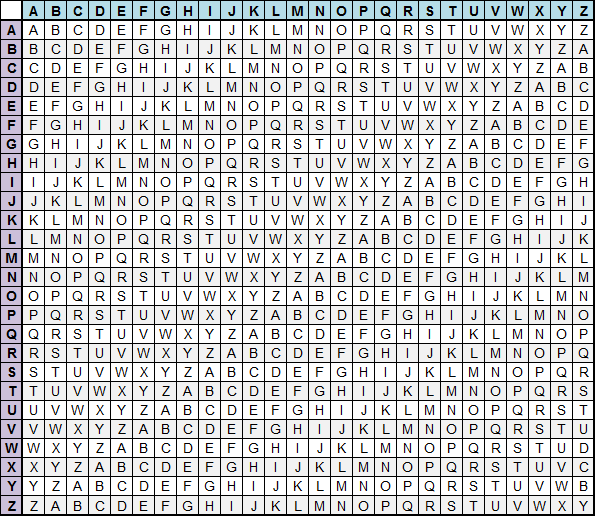

Cyber investigators walkthrough
Scenario:
You have stepped into the shoes of a cyber investigator on the trail of a local criminal called Buster Ping, who has bragged online that the only access to his personal website is through a company called Titan inc. The cyber investigator has already found the social media accounts of the employees and located one individual who may be a weak point into the company.Introduction:
Hello and welcome to the Sheffield Hallam CyberFirst event! Today, we will be going through a personalised workshop designed to help you experience some of what it’s like to be a hacker. In this workshop, you’ll be working to scout a target’s social media account and pry for information before using that to assume his password and get into his account, with all his information.Hopefully, by the time you’re finished with this workshop, you’ll be a little bit more aware of all the varying ways what you post online can expose what you do, and how to avoid falling victim to the very same things that you’re going to do in this workshop.
If you want to form groups to work through it together, then feel free to. This document will be a walkthrough, designed to give you tips and little hints towards the vulnerabilities that can be exploited. In fact, there might even be a little secret that you can discover on some accounts, but that’s something you’ll need to find yourself.
DISCLAIMER: Accessing people’s data without their permission is a crime, so we implore you to use this information from this workshop wisely and make sure that you’re keeping safe, not making others unsafe.
Passwords:
The cyber investigator you will be taking over from has already found an employee’s social media account where he may be unintentionally revealing information that could be used to crack his password. his Reddit account username is u/Acceptable-Bit-4088.Titan inc. website url: kj16-cmd.github.io
John Carter’s social media page: reddit.com/user/Acceptable-Bit-4088/
Passwords such as ‘12345’ and ‘password’ will be guessed extremely easily or can be cracked even quicker with hacking techniques like brute force attacks or dictionary attacks.
Other common passwords use names of people, places, pets and interests of the person.
Strong passwords are extremely important as they provide a layer of security for accounts, such as work emails/access to certain organisational documents and bank accounts. Furthermore, if a hacker does steal a victim’s username and password, the victim could be subject to identity theft. This is where the hacker will be able to access social media etc. and even bank accounts where they can steal money. Another technique the hacker may use is manipulation to force the victim to give further private information. This is called social engineering.
Keeping passwords hidden and stored where people can't find them is just as important as having a strong password. What use will a password have if it is seemingly impossible to crack, but it is noted on a piece of paper that is stuck to the monitor on your desk?
Have a look through John’s social media and see if you can find information that could be used in a password and try your luck logging into his place of work as John.
Database:
John is an administrator of the employee database for Titan inc.Databases are used for centralised storge for an organisation, such as files and account information while also providing a level of security as they encrypt the stored information.
Furthermore, databases provide access control. This offers robust account authentication where only certain accounts are permitted access to certain areas of the organisation. This prevents a breach of data confidentiality as unauthorised accounts will not be able to access areas and open files etc. they shouldn't. For example, an accountant has access to financial information, a nurse medical information, and a CEO will have access to the majority, if not all the organisation's information, including the database.
In this instance, the database appears to be using a Vigenère cipher to encrypt the employee’s passwords.
Vigenère ciphers are a form of encryption using multiple substitution alphabets;
The cipher uses two pieces of text - a keyword, and something you want to be encrypted, called a plaintext. You will match up the letters of the keyword to the plaintext, repeating the key letters as needed, until each letter of the plaintext has a corresponding key word letter.
Using a Vigenère cipher table you will find the coordinates of each pair of letters and find where they intersect, revealing the encrypted letter. To decrypt you just need to do the same steps but instead of using the plaintext you will use the encrypted text.
An example of encryption, the plaintext is HELLO and the keyword is KEY;
The ciphertext will be RIJVS. Use the Vigenère table provided below to check.
An example of decryption, the ciphertext is RIJVS and the keyword is KEY:
Use the first letter from the keyword ‘K’ in the top row and go down the column until you find the first letter of the ciphertext ‘R’. Now go left along the row until you reach the left most column, this letter will be the plaintext ‘H’.
Continue this process to find the plaintext.
Try and crack the passwords for employees with different roles and see if you can log in as one of them, to see more of the website (maybe try roles that might have more confidential access).
Remember, your goal is to try and find Buster Ping’s website link!
Use the key “titan” to decrypt the passwords stored in the database. 
Additional information - Security Investigation:
Security investigations provide important information that security teams can use to further increase an organisation’s security. This is mostly done by external teams that the company will bring in to quote and evaluate the system security that is currently in place, as well as producing an in-depth report to properly explain the vulnerabilities and how to fix them.Investigating the security of a system is something basically any company that has a website is going to be interested in, as there are a wide range of laws and regulations that require them to keep certain industry standards up. As such, they will need different kind of probes and tests to try and figure out vulnerabilities that can be resolved, ranging from OSINT (Open-Source Intelligence), to filtering through waste to find old reports with potential employee information. No matter how small you may think it is, there’s always something that can be found.
Furthermore, companies will often have their own systems in place for what to do in the event of a vulnerability being discovered, and in fact, vulnerability scanning and pen- testing (penetration testing) are both highly valuable skills to be able to do effectively when pursuing a career in cyber security.
P.S. Don’t be afraid to use Google! A search engine will be your greatest tool in the world of Cyber Security, so don’t feel bad if you need to google seemingly simple things.